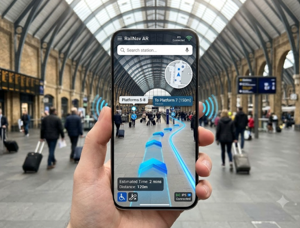

|

|
1. RailNav AR — Smart Railway Station Navigation
Description: An augmented reality indoor navigation ecosystem developed for railway stations where standard GPS fails. Utilizes BLE beacons, 3D interactive maps, and accessibility features for visually impaired and wheelchair passengers.
Tech Stack: Flutter, ARCore, Neo4j Graph DB, Node.js, Python
|